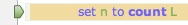

|
Pause |
|
The key feature of debug mode is that your script can pause in the middle of execution.
When a script is paused in debug mode:
-
The Execute command becomes the Resume command.
Thus, Script > Execute becomes Script > Resume, and the Execute button in the toolbar becomes the Resume button.
-
Script > Pause is disabled and checked.
-
The “paused” icon appears at the right end of the title bar (and, if this script is in a tab, at the right side of the tab).

-
The status bar reports “Paused” and possibly the pause location.
-
A green arrow in the gutter indicates the line at which your script is paused.
NOTE: The line pointed to by the green arrow has not yet been executed.
Why Pause
The point of pausing (and of debugging) is that while your script is paused, you can examine its state.
For example, you can study the call stack, the values of your variables, the values of expressions, and the event log.
Then you can make your script proceed again (and possibly pause again).
Rules for Pausing
The most important thing to understand about debugging is when your script will pause. The rules for pausing depend, in the first place, on path of execution.
As your script runs, one line is executed, then another, then another. There are branches, so some code might not be executed. There are loops and handlers, so some code might be executed several times. Like a mouse running in a maze, the computer traces a path of execution through your code. (You can actually watch this happening in debug mode, by tracing.)
The rules for pausing are:
-
Execution will pause automatically if the path of execution comes to an enabled breakpoint. Execution pauses with the green arrow pointing at the breakpointed line, and before executing the breakpointed line.
You can suspend this rule by choosing Script > Break on Breakpoints so that it is unchecked. Otherwise, enabled breakpoints take priority over everything else.
-
The step commands cause execution to proceed by a limited amount and then pause.
Each step command has its own rule for what “a limited amount” means (discussed here).
But remember, unless you’ve suspended breakpoints, breakpoints take priority. If a step command is in process and the path of execution hits an enabled breakpoint, the step command is cancelled and execution pauses at the breakpoint.
-
If you’ve elected to break on exceptions, encountering a runtime error will pause your script — even if your script catches and handles the error.
-
During a lengthy bout of execution (or tracing), you can manually pause the script:
-
Choose Script > Pause.
-
Or, click Pause in the toolbar.
-
Tip: If your script is paused but you can’t see where (because you’ve scrolled to examine some other region of the script), choose Edit > Go to Current Line to bring the line containing the green arrow into view.
Pausing vs. Stopping
Distinguish pausing from stopping!
-
Pausing is possible only in debug mode. It leaves you somewhere in the middle of execution. From here, you can proceed further, even completing the script normally if you want to.
When paused, you cannot turn off debug mode. You must stop the script in order to turn off debug mode.
When paused, you cannot edit your script. You must stop the script in order to edit it.
-
You can stop a script at any time. Stopping aborts execution immediately and returns everything to neutral state. If you execute the script from here, you’ll be starting at the very beginning.
To stop a script:
-
Choose Script > Stop.
-
Or, click Stop in the toolbar.
-